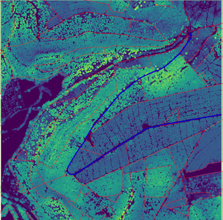

12 Lerneinheit 12: Gelände- und Bestandeshöhenmodelle

In dieser Lehreinheit werden Höhendaten für zwei forstliche Fragestellungen ausgewertet. Im ersten Teil der Übung wird eine Reliefanalyse durchgeführt. Als Fallbeispiel soll geprüft werden, ob die max. Steigung eines Maschinenwegs eingehalten wird. Im zweiten Teil der Übung soll eine weitere forstliche Anwendung von Punktwolkendaten vorgestellt werden. Hier wird ein Bestandesoberflächenmodell erzeugt und anschließend die Oberhöhe der Bestände bestimmt.
12.1 Lernziele & Aufgabenstellung
Lernziele
Die Studierenden sollen:
Ein Geländemodell aus den ALS-Daten ableiten und dieses für die Kontrolle eines Maschinenweges nutzen
Ein Bestandshöhenmodell aus ALS-Daten erstellen und damit die mittlere Bestandeshöhe für alle Bestände bestimmen.
Aufgaben
Raster- und Vektordaten importieren
Kontrolle der max. Steigung eines Maschinenweges
Erstellen einen nDSM und Berechnung der Bestandesoberhöhen
12.2 Aufgabe 0: Anlegen eine neuen QGIS-Projektes und Kontrolle des Nutzerprofils
Folgen sie der Anleitung aus LE01 Kapitel 1.3 um eine neue Ordnerstruktur und ein neues QGIS-Projekt anzulegen. In der Übung bietet es sich an den Ordner “daten” weiter in die Unterordner “vektor” und “raster” zu unterteilen.
Prüfen sie außerdem ob Ihr Nutzerprofil korrekt geladen wurde und ob die OTB-Funktionen im Werkzeugkasten vorhanden sind. Sollte dies nicht der Fall sein stellen sie ihr gesichertes Nutzerprofil wieder her (siehe auch LE01 Kapitel 1.2.4).
12.3 Aufgabe 01: Download und Import der Geodaten
12.3.1 ALS-basierte Punktwolkendaten
Für die Übung verwenden wir Höhendaten des Thüringer Landesamts für Bodenmanagement und Geoinformation (TLBG). Diese Höhendaten wurden mit Hilfe eines Airborne Laser Scanners (ALS) erfasst. Das TLBG stellt sowohl die Punktinformation (LAZ), als auch bereits gerasterte digitale Geländemodelle (DGM) und digitale Oberflächenmodelle (DOM) mit einer räumlichen Auflösung von 1m zur Verfügung. Für die Übung verwenden wir die bereits erstellten DGM- und DOM-Rasterdatensätze.
Diese können direkt im Geoportal unter dem Punkt Höhendaten heruntergeladen werden:
https://geoportal.thueringen.de/gdi-th/download-offene-geodaten
Wir arbeiten wieder in dem Bestand in Heiligenstadt, den wir bereits aus Übung 05 kennen. Dazu benötigen wir die Daten der Kachel 581-5691. Laden sie für diese Kachel das DOM und das DGM als Zip-Datei runter und entpacken sie die Datei in ihren Projektordner unter raster.
12.3.2 Vektordaten
Für die Übung arbeiten wir mit einigen Beständen aus dem FoA Heiligenstadt. Sie finden ein Geopackage mit ausgewählten Beständen unter:
12.4 Aufgabe 02: Kontrolle der max. Steigung für Maschinenwege
Bei der Anlage von Maschinenwegen soll die max. Steigung nicht größer als 15% sein. Im ersten Teil der Übung möchten wir auf Grundlage des Geländemodells prüfen, ob und wo die maximale Steigung eines Maschinenweges überschritten wird.
12.4.1 Visualisierung des Geländemodells
Nachdem sie das DGM als Raster importiert haben wird es als Grauwertbild im QGIS dargestellt. Dabei werden höhere Geländepunkte hell und niedrige dunkel dargestellt. Da das Geländemodell eine sehr hohe räumliche Auflösung hat und die Höhenmessungen mit einem Laserscanner sehr genau sind, können die Maschinenwege sehr gut visualisiert werden. Am besten geht das mit einer „Schummerung“. Dabei wird ein Schattenwurf/Lichteinfall durch die Sonne simuliert.
QGIS bietet die Möglichkeit zur Schummerung direkt unter Layereigenschaften-> Symbolisierung->Darstellungsart->Schummerung.

12.4.2 Kartierung des Maschinenwegs
Zur Kartierung eines Maschinenweges legen sie ein neuen Layer mit dem Namen Weg 1 in einem neuen Geopackage mit dem Namen erschliessung.gpkg in ihrem Projektordner unter vektor an. Kartieren sie den Weg dann als Linie, vergleichbar mit blau eingezeichneten Weg in der Abbildung oben.
12.4.3 Analyse der Steigung
Für die Auswertung der Steigung entlang des Weges können wir das „Profile“ Werkzeug von QGIS verwenden. Bei der ersten Verwendung muss dieses zunächst installiert werden. Dazu öffnen sie Menü->Erweiterungen->Erweiterungen verwalten und installieren -> und suchen dort nach der Erweiterung “Profile Tool“. Nach der erfolgreichen Installation sollten sie das Profile Tool unter Menü-> Erweiterungen-> Profile Tool -> Terrain Profile finden.
Wenn sie das „Terrain Profile“ Werkzeug starten öffnet sich ein neues Fenster. Wählen sie im Layer panel das DGM-Raster aus und klicken sie im rechten Abschnitt des Terrain Profile Tool auf „Layer Hinzufügen“. Wählen sie anschließend im Layer Panel den Layer „Weg 1“ aus und verwenden sie die Option „Ausgewählte Layer“ im Profiletool. Danach sollten sie das Höhenprofil des kartierten Weges als Profil angezeigt bekommen.

Wie sie der Abbildung entnehmen können, ist der kartierte Maschinenweg ca. 1600 m lang und überwindet einen Höhenunterschied von ca. 415 m-355 m=60 m. Daraus ergibt sich eine mittlere Steigung von 60m/1600m = 3,75%. Das Profil zeigt aber, dass die Steigung entlang des Maschinenweges nicht einheitlich ist. Sie müssen also prüfen, ob es Abschnitte mit einer Steigung >15% gibt, um zu gewährleisten, dass die Maschinen den Weg sicher befahren können. Das Profile Tool kann neben der „Höhe“ auch die „Steigung in %“ als Profil darstellen. Dazu müssen sie im Profile Tool unten links von „Height“ auf „Slope %“ umstellen.

Das Steigungsprofil zeigt, dass es zwei Punkte gibt, welche kurze Steigungen >20% haben. Wenn sie über diese Gebiete mit der Maus fahren, werden ihnen automatisch in der Karte die entsprechenden Wegabschnitte mit einem roten Punkt markiert. Da die Ausschläge im Neigungsprofil jeweils nur sehr kurz sind, handelt es sich hierbei vermutlich um Artefakte im Geländemodell. Insofern sind die Abschnitte vermutlich für die Maschinen kein Problem. Mit Hilfe des Tools wissen sie aber, welche Bereiche sie evtl. vor der Holzabfuhr nochmal kontrollieren sollten!
12.5 Aufgabe 03 Berechnung der Bestandeshöhen
Im zweiten Teil der Übung sollen die Bestandesoberhöhen auf Basis des Gelände- und des Oberflächenmodells ermittelt und die Bestandesstruktur visualisiert werden.
12.5.1 Normalisieren der Höhenmodelle
Das Gelände- und Oberflächenmodell enthält Höhenmessdaten, die sich auf den Geoid, also über Normalnull, beziehen. Für die Ermittlung der Bestandeshöhe müssen wir die Höhendaten normalisieren. Dazu muss die Höhe des Geländemodells von der des Oberflächenmodells abgezogen werden. Zu Berechnung der Differenz verwenden wir den bereits bekannten Rasterrechner:
Menü->Raster->Rasterrechner
Mit diesem Werkzeug berechnen wir nDSM=DOM-DGM. Das Ergebnis speichern sie unter dem Namen ndsm.tif in ihrem raster Ordner ab.
12.5.2 Visualisierung als Bestandeshöhenmodell
Im nDSM sind die Strukturen der Bestände bereits sehr gut sichtbar. Zur einfacheren Interpretation sollen die Bestandeshöhen als Pseudofarben dargestellt werden. Dazu öffnen sie die Layereigenschaften und wählen dort als Symbolisierung „Einkanalpseudofarben“. Da die Bestände keine negative Höhe haben können, setzen sie den Minimumwert auf 0. Den Maximumwert können sie auf 40 m runden. Als Farbverlauf bietet sich die „Viridis“ Palette an. Damit die Farben gut interpretiert werden können, verwenden wir den Modus „Gleiches Intervall“ mit 9 Klassen. Dadurch ergeben sich 5m Höhenklassen.

12.5.3 Berechnung der Bestandesoberhöhe pro Bestand
Für die ausgewählten Bestände sollen nun die Bestandesoberhöhen aus dem nDSM bestimmt werden. Dazu müssen alle Pixel, die in einem Bestand liegen, extrahiert und der Maximalwert bestimmt werden. QGIS bietet dafür die Rasteranalysefunktion „Zonenstatistik“ an, die sie in den Verarbeitungswerkzeugen finden können. Wählen sie in dieser Funktion folgende Parameter:
Eingabelayer: Bestandesgrenzen_subset
Rasterlayer: chm.tif
Rasterkanal: 1
Zu berechnende Statistik: wählen sie hier „Mittel“ und „Maximum“
Räumliche Statistik: Bestandeshoehen.gpkg (in ihrem vektor Ordner)
Im letzten Schritt können sie das neue geopackage im QGIS so darstellen, dass die Polygone in Abhängigkeit ihrer maximalen Höhe eingefärbt werden. Wählen sie dazu eine passende Symbolisierung.
Optional:
Nutzen sie die die Funktion “Geländehöhenprofil” aus der Übung 10 (siehe Kapitel 10.7) um für einzelnen Bestände zu prüfen ob die angegebenen Maximal- und Mittelwerte der Bestandeshöhen plausibel sind.